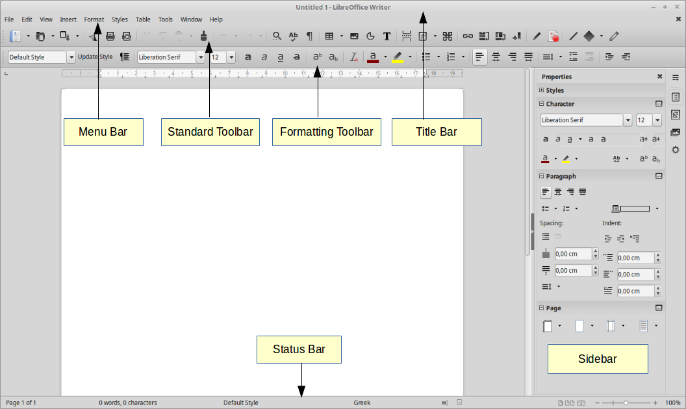
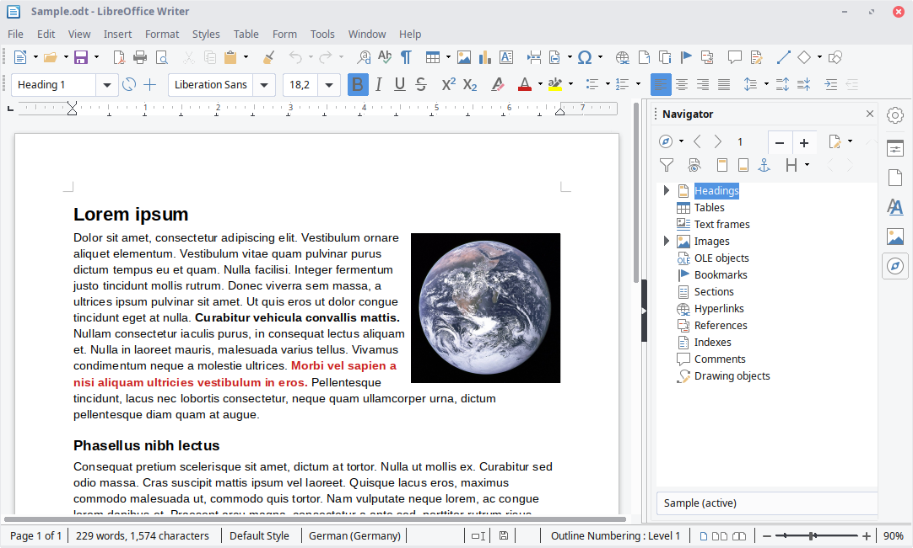

Ord
'Ord' er et skriveredskab. Det er et af de programmer som tilbydes i Libraoffice-pakken.
'Ord' giver dig mulighed for nemt at kunne skrive og redigere i dine tekster.
'Ord' kan således benyttes af flere forskellige målgrupper.
Den studerende vil have stor gavn af 'Ord' idet at det er et god redskab til stile og notater.
Her ses hvor simpelt og overskueligt bygget op:

Og et eksempel på hvordan programmet kan benyttes.

Klik her,
hvis du ønsker mere information om de funktioner og muligheder 'Ord' kan give netop dig.
Download
For at downlode 'Ord' skal du blot trykke på logo'et nedenfor.
|
|
Hvis i har spørgsmål eller oplever problemmer er i velkommen til kontakte os på følgende oplysninger
| Email: |
Libraoffice@gmail.com |
| Telefon nummer: |
+45 54 53 63 01 |